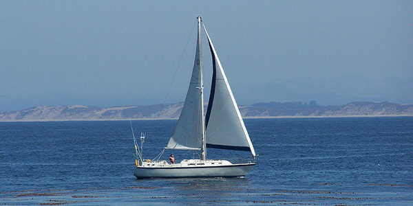

Lien vers études
Lien vers sports
Lien vers loisirs
Lien vers rêves
Je suis de retour aux études après 18 ans. J'ai réussi mon DEP en infographie en 2001 et je travaille dans ce domaine depuis ce temps.
Je crois que l'avenir de mon métier est le web, c'est pourquoi je me suis inscrite au cours d'AEC.

Lien vers index
- École primaire L'Assomption
- École primaire La Maisonnée
- École primaire St-Étienne
- École Secondaire La Poudrière
- École Secondaire Marie-Rivier secondaire 5
- Cégep Drummondville (Science humaine)
- Centre 24 Juin (DEP infographie)
Jadis... je pratiquais beaucoup de sports tel que, la natation de compétition, le volleyball, l'entraînement au gym. Maintenant c'est vraiment plus molo,
je ne fais que de la marche.


Lien vers index
| Nom du sport |
Position |
Expérience |
| Natation |
Brasse |
40 ans |
| Volleyball |
3-4 |
10 ans |
| Marche |
N/D |
40 ans |
Les loisirs que je pratique par les temps qui courent sont la lecture et la télévision, en hiver je suis un peu comme un ours
j'hiberne.
L'été c'est autre chose je suis plus active, je fais BEAUCOUP de voilier (mon chum est un passionné),
baignade, marche, en gros je suis plutôt à l'extérieur.


Lien vers index
- Lecture
- Télévision
- Marche
- Voilier
- Natation
Quels sont mes rêves ? c'est d'être heureuse et en santé ! Aussi simple que ça.


Lien vers index